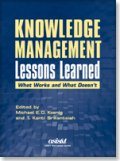

|  |
| About IR |
| Editors |
| Author instructions |
| Copyright |
| Author index |
| Subject index |
| Search |
| Reviews |
| Register |
| Home |
Koenig, Michael E.D. and Srikantaiah, T. Kanti (Eds.) Knowledge management lessons learned: what works and what doesn't. Medford, NJ: Information Today, Inc., 2004. xxv, 595 pp. ISBN 1-57387-181-8 $44.50 (ASIST Member: $35.60) (ASIST Monograph Series).
The domain of 'knowledge management' seems to continue its growth and attract new writers. In this volume, a follow up from an earlier one by the same editors, a large number of perspectives on 'km' are presented. The thirty-two chapters give together a broad overview of this vast field. What is knowledge management then? In the introduction it is stated that the volume does not intend to define the subject. Nevertheless, already in Chapter Two, the birth of a new discipline, 'km', is discussed using publication data and citations as evidence. Top cited references gives an idea of the context and background theories: Nonaka and Takeuchi (1995), Davenport and Prusak (1998), Senge (1990), Nonaka (1994), Argyris and Schon (1978) comprise the top five citations. Obviously, it is about organizations and problems related to learning, information management and innovation. These are more or less classical themes in organizational studies. 'Knowledge management', however is a more recent concept and more concerned with the possibilities of Internet and new information and communication technology in modern organizations and new business concepts. In Chapter Four we get one definition stating that, "KM is an emerging set of strategies and approaches to create, safeguard, and put to use a wide range of knowledge assets (e.g., people and information)". To get information to flow to the right person at the right time is a critical piece of the definition. Actually, the latter is the same mission statement I learned from company librarians more than thirty years ago. Several other examples can be given indicating the tendency to use new concepts instead of old ones. Information or documents are often called 'knowledge'; information management becomes 'knowledge management' and classification becomes 'taxonomies' - a necessity for the modern organization. In Chapter Three we can learn from IBM experience a number of lessons including the conclusion that we should recognize 'km' for what it is: "a continuation of the inquiry into how the internal operations of an enterprise can be improved by proactively managing the resources and infrastructure under its control".
Academics may quarrel about definitions and the use of new concepts for old problems, but this volume also illustrates that there are new solutions. With a basically applied approach, the book gives valuable information on how to work with information using the new possibilities brought to us by the Internet, new software solutions and a holistic perspective on organizational processes and business concepts. This is demonstrated by many examples and case studies as well as by theoretical and practical perspectives. A large portion is devoted to 'Content management', which includes chapters on the semantic web, taxonomies and text-mining. This section of the book illustrates the beginning of a new era where we can envisage more efficient and flexible tools for information handling, international collaboration and innovation work. Issues on collaboration and information sharing are also dealt with in a separate section called 'communities of practice'.
The complexity of the book is reduced by a 'Road Map' - a thematic guide in the beginning of the volume. A brief bibliography and an index conclude this overview. Anyone who wants to have a broad picture and concrete examples can certainly benefit from reading this book. However, subject specialists may find the individual chapters a little too short or general.
Professor Lars Höglund
Swedish School of Library and Information Studies
Gothenburg University and Högskolan i Borås
Borås, Sweden
January 2005
How to cite this review
Höglund, L. (2005). Review of: Koenig, Michael E.D. and Srikantaiah, T. Kanti (Eds.) Knowledge management lessons learned: what works and what doesn't. Medford, NJ: Information Today, Inc., 2004. Information Research, 10(2), review no. R165 [Available at: http://informationr.net/ir/reviews/revs165.html]